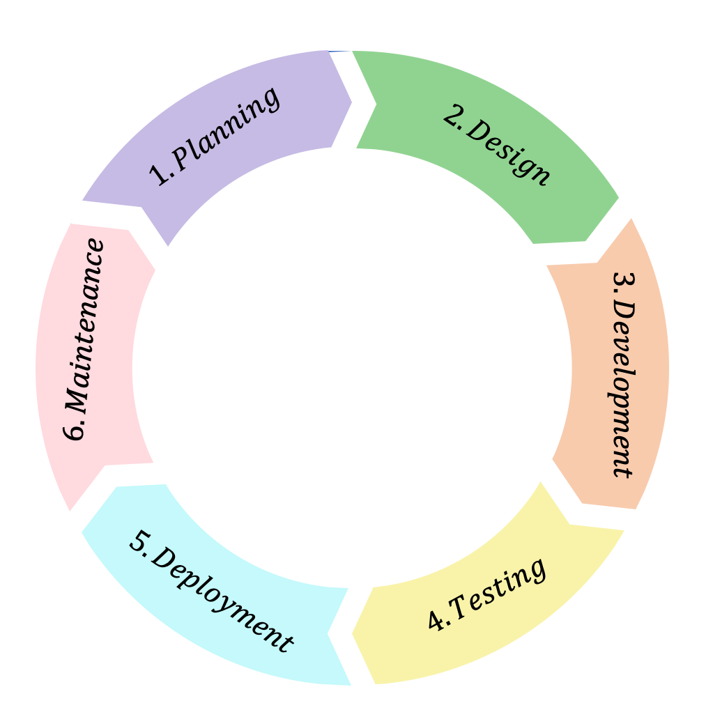

Agile Development & DevOps
Software development has evolved from traditional, project-based approaches to rapid, continuous delivery. Agile and DevOps practices enhance collaboration, accelerate time-to-market, and ensure high-quality outcomes. Our team leverages modern, scalable frameworks to deliver robust solutions, consistently meeting client requirements and providing the most effective development strategies for your business.
Agile Development: Key Product Benefits

End-to-End Development & Deployment